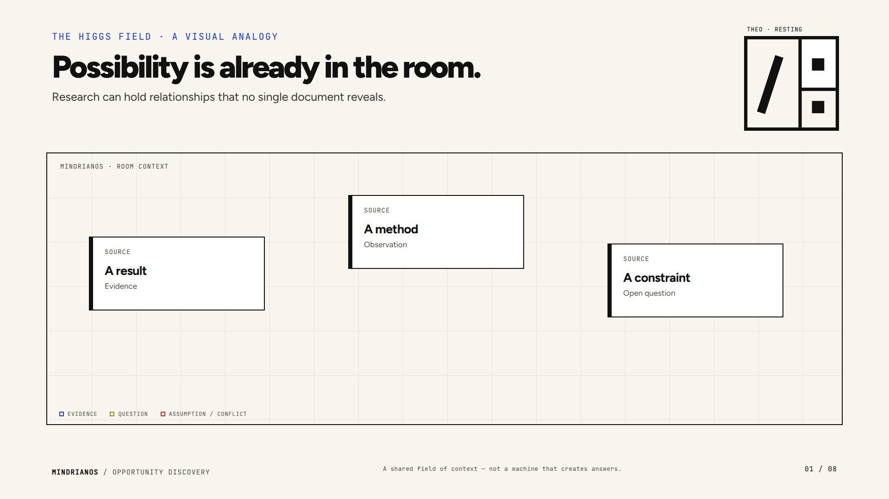
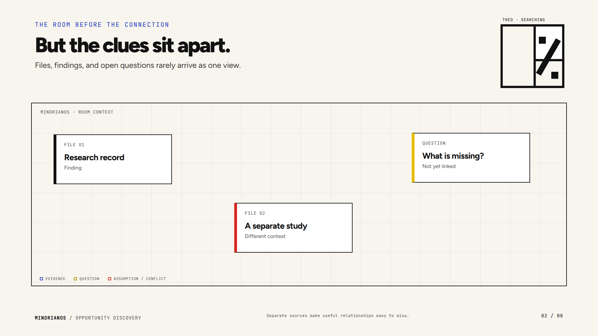
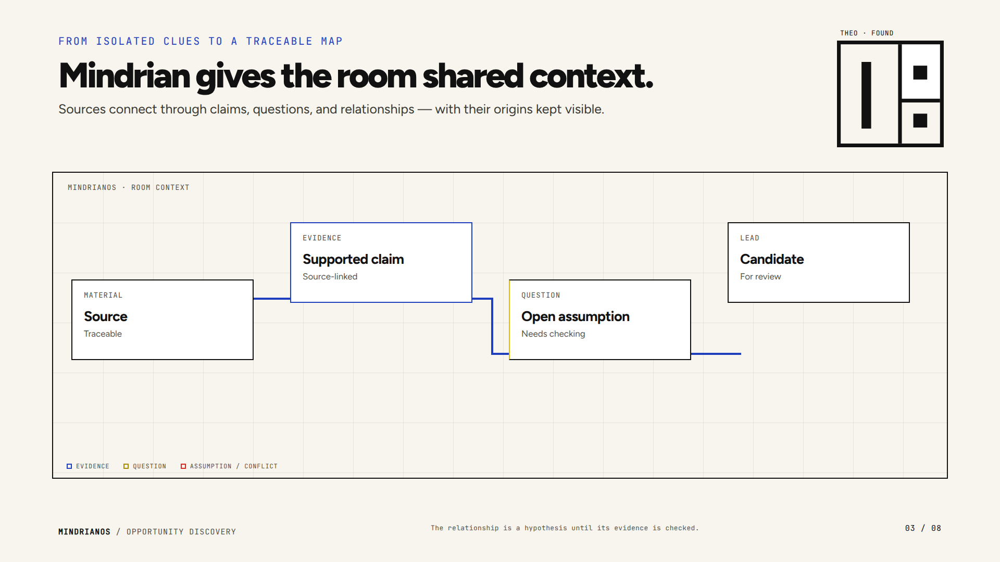
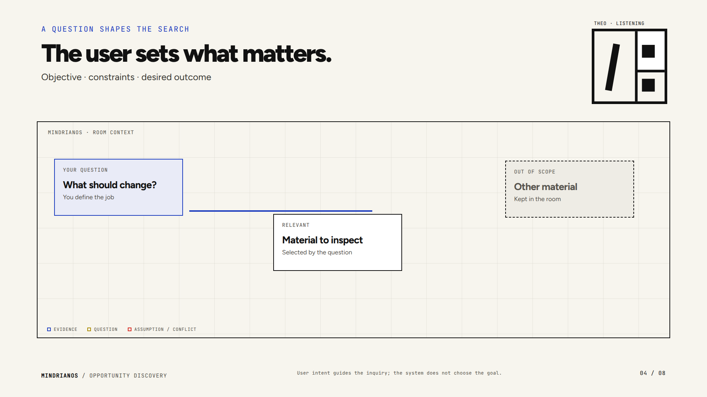
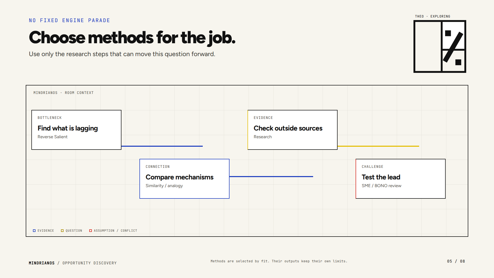
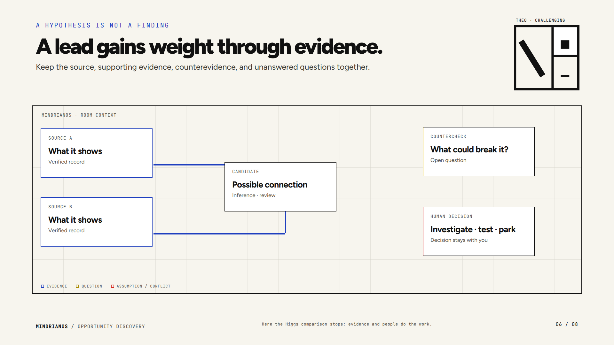
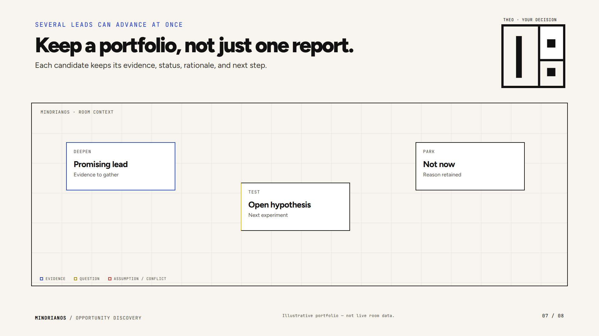
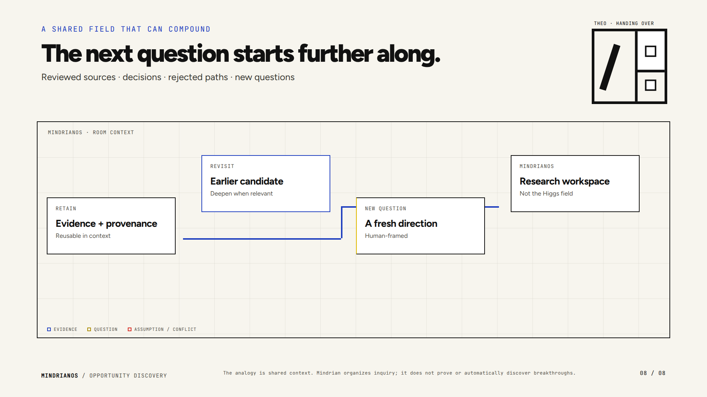

Act 1 · The hidden field
01 · Possibility is already in the room
0.000–5.264s“Some of the most valuable opportunities are hiding in research we already have.”
A new visual direction for the MindrianOS explainer. The Higgs field serves as a metaphor for shared context: sources, questions, evidence, and decisions become easier to examine together as a room develops an opportunity portfolio.

“Some of the most valuable opportunities are hiding in research we already have.”

“But sources sit in separate files. Connections get missed. And one report rarely becomes a growing body of work.”

“Mindrian is being built to turn a research room into an opportunity portfolio.”

“Bring in the material. Set the question, constraints, and outcome that matter.”

“The goal is to use methods that fit the job: map bottlenecks, explore connections, gather evidence, and challenge a promising lead.”

“Each candidate can stay linked to its sources, with uncertainty and counterevidence visible. You decide what to investigate, what to test, and what to set aside.”

“Then the room keeps the useful work: evidence, open questions, decisions, and next experiments.”

“So each new question starts from what you've already learned. Mindrian helps turn scattered research into opportunities people can revisit, deepen, and act on.”